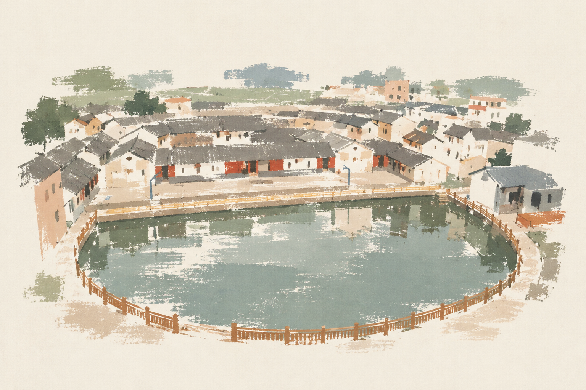

始建连平州
明崇祯七年，划出和平、河源、长宁、翁源四县的部分地区， 设置连平州。配图是连平大湖镇的客家围龙屋—— 明清以来，迁入连平的客家人聚族而居， 围屋与门前的半月塘，至今仍是乡村常见的风景。
THEN & NOW
从几个时间节点开始，
看看这座地方怎样走到今天。
01 — FOLLOW THE YEARS
点击年份，查看对应的地方历史。


1634 与 1911 年配图为连平真实照片：大湖镇客家围龙屋、清代白云楼。 1988 年为行政位置示意图。
明崇祯七年，划出和平、河源、长宁、翁源四县的部分地区， 设置连平州。配图是连平大湖镇的客家围龙屋—— 明清以来，迁入连平的客家人聚族而居， 围屋与门前的半月塘，至今仍是乡村常见的风景。
从1634年开始认识连平。
02 — PEOPLE & LOCAL MEMORY
元善镇的颜氏文化，是继续了解连平历史的一个入口。 从人物、家族到流传的官箴， 地方历史也能通过具体的文字与故事被认识。
连平县政府的元善镇介绍，将颜氏文化列为当地文化内容。 进一步阅读时，可以从清代颜氏人物、 三十六字官箴及相关历史资料入手。
这句话见于相关官箴。 可以把它理解为对公正与廉洁的强调： 公正有助于明辨，廉洁有助于建立威信。
人物具体经历、历史建筑与实物图片， 后续需结合原始资料进一步核实与补充。 本页暂不编写虚构历史情节。